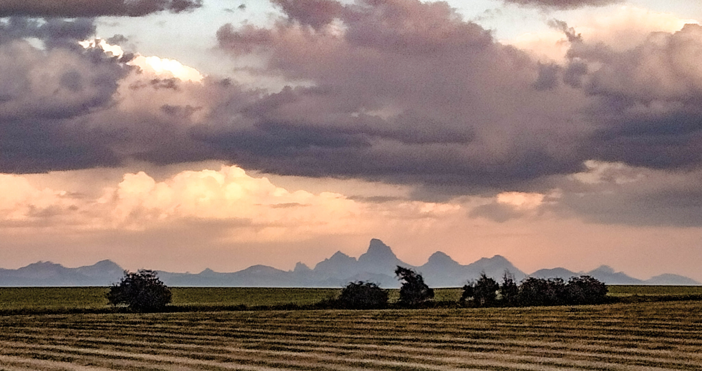

Western Native Trout Challenge
For whatever reason, I am not as excited for the Western Native Trout Challenge as I am for the state slams. I have been trying to put my finger on why, and I think it has something to do with the idea of becoming fully invested in a state and learning about the different drainages. The WNTC is bigger for sure, but it feels a little more instrumental; it’s kind of like, here’s a list of fish all over the country, go catch them. The best thing about the WNTC challenge is the high quality hat they send you.
I will also admit that I find the rules incredibly confusing, and I’m wondering whether this sentiment is shared by others. What follows is a wonky discussion, but for those interested, I’ll explain why I think the WNTC rules are flawed. If you don’t care about this, you can skip to the next section.
The requirements for the first level, “Expert caster” are simple enough: catch six fish in four different states. After that, things get complicated. To complete the next step, “Advanced caster,” one must catch twelve fish in eight states, though the first six count from the Expert level count. To put it differently, you must repeat the Expert level with different fish species (you submit the fish that you caught for the first level, but you must catch six additional fish and cannot duplicate species for the second level).
The problem arises with the limited list of fish provided by each of the states. For example, suppose I wanted to fish in Washington. That state only has three qualifying fish: Redband, Westslope, and Coastal. Each of these fish are native to other states, and in fact I’ve already caught two of these fish for my first level, so I can only use one fish from Washington to advance to the next level of “Advanced caster”.
New Mexico only has two fish, one of which is also one of Colorado’s two fish, and the other Colorado fish is the Colorado River cutt, which is on the list for three other states. But, by catching the Colorado River cutt in Utah, I’ve now eliminated Colorado as a state unless I catch the Rio Grande, which in turn eliminates New Mexico as a state. You can catch the same species again and complete the lower “Expert” level for a second time, but it becomes very difficult to plan trips to reach each of the next two steps because one runs out of states pretty quickly. In statistics, we would say there are not enough degrees of freedom to complete each of the three levels without repeating fish (or without going to Alaska).
I’m betting the challenge was setup this way after bargaining with each state’s Department of Fish and Game, and I imagine each state wants to direct people to certain places and certain fish. But this takes far too much advanced planning and thinking for my taste. What I wish they would have done is made each fish-state combination a possible catch, then just said, to complete the first level catch eight, second is catch 16, third is catch 22 (no pun intended). If one wants to catch a bull trout in Idaho, Nevada, and Oregon, go for it, that’s three of eight. Or, if an angler wants to catch five in Nevada and three in Utah, that’s enough for the “Expert level”, and reaching the next level requires another eight fish-state combinations. The eight fish requirement would have made the challenge “bigger” than any single state challenge and would have forced people to go to at least two states, and probably more. It also would have simplified things dramatically, and allowed anglers to fish wherever they wanted without having to backward induct where they might be or which fish they might catch in the future.
To make this a bit more concrete, I am planning to fish Oregon sometime soon and it would be nice to add some fish to complete the next level of the challenge. Here’s the problem. Oregon has five fish on the list, which is a lot, but none of these will help me reach the “Advanced caster” step. I need to catch a bull trout from Nevada for that state’s challenge, so catching one in Oregon doesn’t do anything for me. Same story for the Coastal Cutthroat, which I need for California’s challenge. The other three, Lahontan, Redband, and Westslope, I have already caught in other states and submitted to complete my first challenge level.
As a result, I don’t know when, or even if, I will be able to complete the second level of the challenge. It probably won’t be anytime soon, and I’m planning on directing most of my attention to state challenges.
Previously Caught Fish
As noted above, the WNTC requires six fish across four states. A few of the fish I could use from completing my Utah, Wyoming, and Nevada slams, though I needed to submit a slightly different combination of fish given the Challenge’s rules about different fish from different states.
From previous slams, I submitted a Bonneville from the Logan River, Utah, and the Lahontan from Nevada. More details about my Utah and Nevada slams can be found here.
That is two fish from two states. The other two obvious states that I’ve fished quite a bit are Idaho and Wyoming. In Wyoming, the qualifying fish are the Bonneville, Colorado River, Westslope and Yellowstone. The Bonneville was out because I used that fish for Utah. The Westslope is also a a qualifying fish in Idaho, and the Yellowstone is a qualifying fish in Nevada and Wyoming. The only distinct fish between Idaho and Wyoming are the bull trout in Idaho, the Redband in Idaho, and the Colorado River in Wyoming. Basically, I’d need some combination of those fish between those two states. Confused yet?
Because I’d already caught Colorado River and Yellowstone cutthroats in Wyoming for the Wyoming slam, I now I had four fish from three states. Perhaps surprisingly, I had not caught any qualifying fish in Idaho. Catching any qualifying fish there (that I wasn’t submitting for another state) would give me five fish and four states, and then I could submit any other fish from any state.
Aborted Attempt to Fish Near Lincoln, MT
Fish number five I caught in the summer of 2019 during a family trip to Lake Coeur d’Alene. I left a few days early and drove through the eastern part of Idaho into Montana, with plans to fish the Lincoln and Ovando, MT areas. From there, I would pick up the 90, and drive to the Idaho panhandle, fishing some rivers there. This did not work as expected, and in fact, the trip went very poorly, right up to the point where it went great.
I was not in charge of scheduling the stay on Lake Coeur d’Alene and I was worried about my fishing plan because it was still very early in the season, around June 15th. I suspected the larger rivers like the Blackfoot and Clark Fork would still be blown out, and when I got to the area it was clear they were unfishable. Instead, my planned first stop was a forest service campground on a small creek called Copper Creek. The scenery and campground were nice enough but on arrival, I saw that the drainage had semi-recently burned. As a result, there were downed trees all over the creek. It was almost impossible to wade, and while I’m sure a more determined angler could have made it work, I gave up pretty quickly. The creek was high, the downfall was bad, and I’d driven all day and it was getting dark.
Copper Creek, Montana. The deadfall and high water made it almost impossible to fish.
Looking down on the Copper Creek drainage and toward the Scapegoat Wilderness.
I spent the night in the campground and had plans the next morning to hike to the Landers Fork, which was about two miles from the trailhead near the campground. Two things happened that prevented this. The first is that I very quickly developed a weird cramp in my foot that made hiking difficult. As I was debating whether or not to turn around and hike back to my car, the second thing happened: I saw a relatively fresh, massive grizzly print on the trail. If ever the universe was giving me a sign, this was it. I turned around, got in my car, and left Copper Creek to continue my drive to Idaho.
Time to turn around! While the mud around the track was dry, the tracks themselves appeared relatively fresh–maybe a week old, at most.
I have never seen a grizzly up close in the lower 48. I saw a young black bear from about one hundred yards hiking in the Salt River Range in Wyoming, and I saw a black spot, from maybe a mile away, beelining over a pass (and toward me) in the Gros Ventre Range above Granite Hot Springs, WY. I’m not sure it was a grizzly bear, and I’m not even sure it was a bear at all, but it was big and fast, and didn’t move like an ungulate. Incidentally two years later, in 2021, a grizzly attacked and killed a camper in the town of Ovando, MT.
The Lincoln Ranger office in Lincoln, MT has a very large grizzly bear on display.
Coeur d’Alene River–Westslope Cutthroat
From Montana, I drove straight through to the North Fork of the Coeur d’Alene River, but arrived too late in the day to do much fishing. I stopped at Honeysuckle Campground and was the only person staying there. Things were looking up, until I saw that the fee for the campground was $24 a night! How could it be so expensive when no one was there? And come on, that is outrageous for a national forest service campground. I don’t think I’ve ever paid more than about $16 for one of these campgrounds and I refused to pay it on principle. I resolved the next day to leave the campground and find dispersed camping in the area. I had plans to drive over a ridge and down into the Teepee Creek watershed which eventually flows into the mainstem Coeur d’Alene. I’d read online that fishing was good in Teepee and I’ve always enjoyed fishing smaller waters (online sources refer to it as both “Tepee” and “Teepee”).
The fishing was decent on Teepee Creek. I packed up camp, made the short drive over to the creek, and began fishing a meadow near a research station of some kind. The water was a little high, and I didn’t have any success on dry flies, so I switched to a dry dropper setup. I lost one nice fish, then hooked another. Regrettably, I took almost no pictures on this trip for some reason, so in lieu of a Teepee Creek picture, here is one of the fish I caught, a 15 inch Westslope cutthroat.
My first Westslope cutt from Teepee Creek.
Things began to warm up and I couldn’t get any more action on Teepee Creek so I made the decision to drive farther down the forest road, which would take me back to the mainstem Couer d’Alene, then back out to the junction where the North Fork and Coeur d’Alene meet, just outside of Caltado, Idaho. The drive up the North Fork to Honeysuckle, then over to Teepee, and back down the mainstem makes a big loop. I needed to get back to civilization anyway to make a phone call, and I still had to find a dispersed camping site. Despite being early in the season, both rivers were at summer flows and I made a few stops to fish along the Coeur d’Alene, but I didn’t have any success.
It was crowded, as most holes had a guy or two in them, and there were a lot of people driving the road looking for spots. This suggested to me that the river sees a lot of pressure. It’s big enough, but the water miles alongside the road are somewhat limited so I think the fish in the obvious holes see a lot of flies. There are also lots of other people recreating, swimming in the river, wading, etc., which isn’t necessarily the best for fishing. Despite it being mid-June, it was very hot. In fact, the temperature reached 105, or close to it, in the town of Coeur d’Alene which, needless to say, is not good for the fishing. After a few frustrating hours, a lot of which was spent just trying to find some space on the river, I gave up.
I started back up the road to Honeysuckle Campground, off the mainstem and onto the North Fork to find a spot to disperse camp. There was a tiny turnoff in the road which didn’t look like much but beneath it, in the trees, was an obvious camping area. I found my free spot at last (take that, Recreation.gov). After setting up camp, I walked down to the river in the evening and fished a little. I didn’t have much success until I came to a small, obvious-looking pool that definitely held fish. I caught a few, tiny trout, though a moose did appear out of the timber on the other side of the river from me. Despite the lack of fishing excitement, that was one of those transcendent experiences that make it all worth while; just me and a moose hanging out by the river in the twilight. Shortly after the moose left, I heard a noise from behind me and expected another moose (or a bear), but it was two other fisherman. I’m not even sure where they came from as the road was up the hill and there weren’t any other campsites around. Was there nowhere on this river where I would have some space to myself? I gave up the hole to them as I wasn’t having much success and went back to my camp.
The next morning I was supposed to meet the family in Harrison, on the lake. I was frustrated after the previous day and my plan was to just pack up and leave. I packed up, but made the last minute decision to fish in the morning, and try once again to catch a decent fish in the North Fork Coeur d’Alene. I walked down to the river above a bridge and began wading upstream. I’d tried a lot of different combinations of flies and setups in the previous two days, but because I wasn’t expecting much and was feeling lazy, I had a size 12 or 14 caddis on my line, about the simplest setup imaginable. I pretty quickly caught some small cutts in a shallow section of the river, which encouraged me to wade farther upstream. In a nice looking hole, I made a cast, and a massive fish took the fly. It was more than 15 inches and fought hard. Eventually I landed the fish in my net, and saw that it had another fly with broken line in its mouth. I removed my fly, got the other fly out, and released the fish. I’d actually caught a large Westslope Cutthroat in the North Fork. It was all gravy from there, and I waded upstream and caught more large fish. That turned out to be one of my best days of fishing ever.
Is the Coeur d’Alene a good trout river? I think so? I didn’t have any success for about the first ten hours I fished (yes, I hooked two cutts in Teepee Creek), but the last four or so were magical. I’m not sure what changed, other than my fly. It is crowded, and I don’t like crowds, but clearly if you can find the right spots with the right fly, there are some fish worth catching. And, after all that, the Idaho Westslope gave me five fish from four states.
Big Wood River–Redband Trout
I had no idea that redband trout are a form of rainbow trout, until I read it on the Idaho Fish and Game websie. A lot of people, it seems, are confused by this based on what I’ve read in other fly fishing forums. Here’s what the IFG says, “All rainbow trout native to streams east of the Cascade Mountains in Oregon and Washington are called redband trout.” This would be my last fish necessary for to complete the first level of the WNTC, and I had a plan to fish for it on the Big Wood River in Ketchum, Idaho.
I’m in the Ketchum/Sun Valley area often enough, and it’s one of my favorite mountain towns. There are a lot of outdoor activites, it’s beautiful, especially in the fall, and the Big Wood flows right through town. There is only one problem: I’ve never actually had much success on the Big Wood. A few times I’ve been to Ketchum, my timing has been bad. One year it was still too high to fish and my attempt to wade it nearly resulted in me getting swept downstream into the Snake. Most other times I’ve been to Ketchum I’ve been with other people who don’t want to fish and have only limited patience for watching me fish. I finally got my chance to really fish it in the summer of 2020 when we took advantage of remote work to spend a week at an Airbnb in Hailey. There would be no dining out or hitting the town, but I would have a chance to spend some time on the Big Wood.
The unfortunate part of the Big Wood is that it is crowded. That’s to be expected given that it flows through a series of famous mountain towns, and there are fly shops in Ketchum that provide guide services. But still, the first day I tried to fish it in 2020, I didn’t have to wade that far upriver until I ran into another group coming down. I turned around to go back, and there was yet another group behind me. I’ve had more success driving upstream or downstream of town rather than trying to fish in Ketchum itself.
In fact, the first redband trout I caught was in Hailey, near where I was staying. It was mid-July, and the water was still a little high, but wadeable. It was clear nothing was happening on the surface, so I used both a dry dropper and a tight-line nymph setup to catch fish. Both worked relatively well. Later in the trip I went upstream and managed to catch one or two fish on a dry, though I was using a dropper as well, and that seemed to work better.
That experience on the Big Wood was very serviceable. The fishing was steady though not spectacular, I didn’t catch any fish over about 12 inches, nor did I have much action on drys. Still, the Big Wood is a pretty easy river to figure out. Staying in Ketchum or Hailey and spending a few days fishing the Big Wood, and some nearby creeks (e.g., Trail Creek), is a pleasant experience. Just don’t expect to be alone on the water.
Other Fish
With the Redband from the Big Wood, I had my six fish from four states. Even though I’d previously caught a Yellowstone and Colorado River cutt for the Wyoming slam, I actually submitted two different fish from my slam fish, just for fun. I caught a Colorado River cutthroat from the very top of LaBarge Creek in the Tri-Basin divide. The creek here is very small, but I managed to bring up a few fish. Most people are going to want to fish it farther downstream where the creek is larger, however.
I also submitted a Yellowstone from South Leigh Creek, outside of Driggs, Idaho. There are a number of small creeks flowing off the western side of the Teton Range, and I picked South Leigh because it was closest to where I was staying. I believe Bitch Creek to be the most famous fishing water of these creeks, and I have backpacked, but not fished, in that drainage. I believe Teton Creek, Badger Creek, North Leigh Creek, and others are also possibilities, but I haven’t fished any of these either. My impression is they are all pretty small and might make for a nice small-water experience, but aren’t going to provide great fishing. Keep in mind that while you’re on the west side of the Tetons and the towns themselves are located in Idaho, almost all the public lands where you can fish are in Wyoming.
 Grand Tetons from Driggs, Idaho area.
Submitted Fish
Here are the fish I submitted for the “Expert” level of the WNTC and where I caught them.
Bonneville Cutt
- Logan River, UT
Colorado River Cutt
- LaBarge Creek, WY
Westslope Cutt
- Teepee Creek, ID
Yellowstone Cutt
- S. Leigh Creek, WY
Lahontan Cutt
- West Fork Marys River, NV
Redband
- Big Wood River, ID